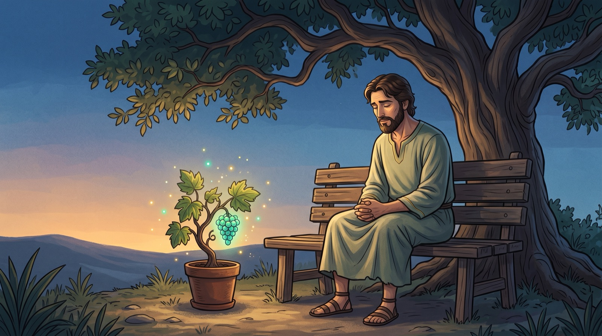
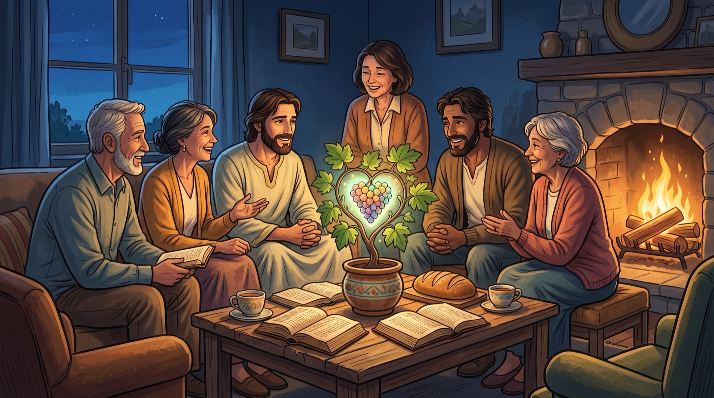

Урок 4. Как возрастать в новой жизни во Христе?
Очень редко мы останавливаемся на время, для того чтобы оценить наш рост. Но как велика наша радость, когда мы видим настоящее возрастание. Духовный рост настолько же важен, как и физический. Наша цель - зрелость во Христе.
Зрелость требует времени, а не укороченных сроков. Это жизненный процесс!
1 КАК ОЦЕНИТЬ СВОЙ ДУХОВНЫЙ РОСТ ВО ХРИСТЕ?
Прочти Матф. 22:37-38
В Ветхом Завете существует более 600 заповедей.
Прочти Филиппийцам 3:7-10
“Познание Его” было увлечением Святого Апостола Павла, то же являлось и целью его жизни.
2 КАК МОЖНО ВОЗРАСТАТЬ ВО ВЗАИМООТНОШЕНИЯХ СО ХРИСТОМ?
Существуют четыре принципа в общении, которые помогут тебе вырасти в твоих взаимоотношениях со Христом по мере того, как ты будешь жить исполненной Святым Духом жизнью:
1. Господь обращается к тебе через Писание, на страницах которого Он проявляет Свой характер и волю.
Царь Давид обнаружил клад в Писании:
“Суды Господни - истина, все праведны. Они вожделеннее золота и даже множества золота чистого, слаще меда и капель сота”
Псалом 18:10б,11
Давид принимал Писание как нечто чрезвычайно ценное, потому что в нем он нашел “мудрость, управление, вдохновение, помощь и мотивацию”.
Святой Августин, один из праотцов Церкви, написал следующее признание:
“Ты создал нас для Себя, и наши сердца находят покой только в Тебе”.
2. “Господь, научи нас молиться”, попросили Иисуса его ученики.

Время, проведенное с Иисусом, научило их тому, что молитва является сущностью христианской жизни.
Прочти ответ Христа из Евангелия от Луки 11:2-4.
Пример, данный Иисусом ученикам подчеркивает 3 аспекта:
- А. Хвала и поклонение (Лука 11:2-4)
- Б. Желание познать и исполнить волю Господа (”да будет воля Твоя”)
- В. Выражение наших нужд (3,4 стихи)
3. Следующие знаки хорошо известны и представляют собой известные фирмы.
Иисус сказал, что Его последователи будут узнаваемы через любовь, которой они любят друг друга. Любить и стремиться к людям с сердцем для Господа является неотъемлемой частью христианской природы.
Наши взаимоотношения очень важны. Костер хорошо горит, когда поленья собраны вместе, но по отдельности они быстро погаснут. Так же и христиане нуждаются в теплоте и ободрении друг друга.

Прочти Евр. 10:24,25
Все мы знаем, насколько важен наш круг друзей. Принципиально важно искать друзей, которые призывали бы вас к духовному росту.
” Не обманывайтесь: худые сообщества развращают добрые нравы”.
1 Коринфянам 15:33
4. Ты общаешься с нехристианами через свидетельство, делясь с ними доброй вестью о спасении через Христа.
Прочти 1 Петра 3:15
3 КАКОВЫ РЕЗУЛЬТАТЫ РОСТА ВО ВЗАИМООТНОШЕНИЯХ СО ХРИСТОМ?
Прочти 2 Петра 1:5-9
4 КАКОВА ТВОЯ РОЛЬ В ЭТОМ ПРОЦЕССЕ?
1. Уделяй время для изучения Библии и молитвы.
Можешь начать с чтения Иоанна 15:1-17
По мере того, как ты читаешь, подчеркивай стихи, имеющие особую важность для тебя.
Когда стих говорит тебе что-то особенное:
- Напиши его на листочек.
- Обобщи его смысл своими словами.
- Запиши, как бы ты мог применить его в своей жизни.
| Стих | Смысл | Применение |
|---|---|---|
- Ты можешь также изучить: Кол. 1:9-12, 2 Кор 5:18-21, 1 Кор. 12:12-27.
2. Поищи церковь или группу по изучению Библии, где бы ты мог регулярно общаться с другими людьми, которые, в свою очередь, также хотят научиться жить плодотворной жизнью во Христе.
“Церковь - это дом Господень, как считает Апостол Павел, в своем письме Тимофею”
Св. Иоанн
3. Расскажи кому-нибудь о Христе!
Попроси более духовно зрелого друга помочь тебе в этом.
Material publicat de Here’s Life Publishers, Inc. © 1984, Campus Crusade for Christ, Inc. Traducere în lb. Rusa, 1998 Toate drepturile rezervate.